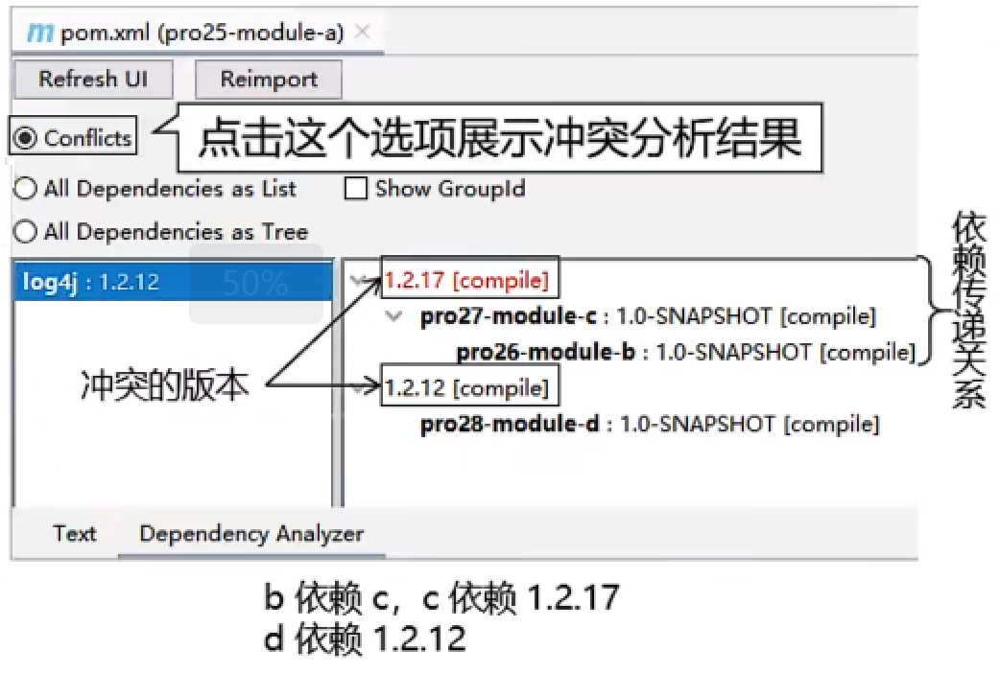

概述
Apache Maven is a build tool for Java projects. Using a project object model (POM), Maven manages a project's compilation, testing, and documentation.
Maven是Java项目的构建工具。通过使用项目对象模型（POM），Maven能够管理项目的编译、测试和文档工作。
结构
功能
对比
maven 和 gradle 对比：前者注重依赖管理、后者注重构建流程
目录结构
提前约定好目录结构，为了让构建过程能够尽可能自动化完成。
src - main |- java (源代码)
| | |- resources (配置文件)
| |
| |- test - java (测试源代码)
|
|- target (编译产物)
下载并解压maven
无中文，无空格的路径目录下
修改maven配置文件
核心配置文件：conf/settings.xml
配置本地仓库地址
1<!-- localRepository2| The path to the local repository maven will use to store artifacts.3|4| Default: ${user.home}/.m2/repository5<localRepository>/path/to/local/repo</localRepository>6-->7<localRepository>L:\software\apache-maven-3.6.3\repo</localRepository>配置远程仓库
xxxxxxxxxx61<mirror>2 <id>nexus-aliyun</id>3 <mirrorOf>central</mirrorOf>4 <name>Nexus aliyun</name>5 <url>http://maven.aliyun.com/nexus/content/groups/public</url>6</mirror>配置基础jdk版本
xxxxxxxxxx121<profile>2 <id>jdk-1.8</id>3 <activation>4 <activeByDefault>true</activeByDefault>5 <jdk>1.8</jdk>6 </activation>7 <properties>8 <maven.compiler.source>1.8</maven.compiler.source>9 <maven.compiler.target>1.8</maven.compiler.target>10 <maven.compiler.compilerVersion>1.8</maven.compiler.compilerVersion>11 </properties>12</profile>
配置环境变量
检查 JAVA_HOME
Maven是一个用Java语言开发的程序，基于JDK来运行 例子：L:\software\java\jdk1.8.0_131 验证：java -version
配置 MAVEN_HOME
指向bin的上一级目录 例子：L:\software\apache-maven-3.6.3
配置 PATH
使得maven指令可以全局可用 例子：%MAVEN_HOME%\bin 验证：mvn -v
删除本地仓库
直接删除localRepository文件夹
删除maven
直接删除maven文件夹
删除环境变量
运行 Maven 中和 构建操作相关的命令 时，必须进入到 pom.xml 所在的目录 。否则报错：
xxxxxxxxxx11The goal you specified requires a project to execute but there is no POM in this directory
mvn archetype:generate 创建maven项目
注：不能在一个非 pom 的工程下再创建其他工程。
(不能在jar/web工程里面再创建一个jar/web工程)
创建java工程
x1# 创建java工程2mvn archetype:generate3
4# 示例：5Choose a number or apply filter (format: [groupId:]artifactId, case sensitive contains): 7:【直接回车，使用默认值】6
7Define value for property 'groupId': com.shimmer.maven8Define value for property 'artifactId': pro01-maven-java9Define value for property 'version' 1.0-SNAPSHOT: :【直接回车，使用默认值】10Define value for property 'package' com.shimmer.maven: :【直接回车，使用默认值】11
12Confirm properties configuration: 13groupId: com.shimmer.maven 14artifactId: pro01-maven-java 15version: 1.0-SNAPSHOT 16package: com.shimmer.maven Y: :【直接回车，表示确认。如果前面有输入错误，想要重新输入，则输入 N 再回车。】
创建web工程
xxxxxxxxxx141# 创建web工程2mvn archetype:generate -DarchetypeGroupId=org.apache.maven.archetypes -DarchetypeArtifactId=maven-archetype-webapp -DarchetypeVersion=1.43
4# 示例5Define value for property 'groupId': com.shimmer.maven6Define value for property 'artifactId': pro02-maven-web7Define value for property 'version' 1.0-SNAPSHOT:8Define value for property 'package' com.shimmer.maven:9Confirm properties configuration:10groupId: com.shimmer.maven11artifactId: pro02-maven-web12version: 1.0-SNAPSHOT13package: com.shimmer.maven14 Y: Y
mvn clean 删除target目录
mvn compile 主程序编译，结果存放目录：target/classes
mvn test-compile 测试程序编译，结果存放目录：target/test-classes
mvn test 执行测试代码，结果报告存放目录：target/surefire-reports
mvn package 打成jar/war包，存放目录：target
mvn install 将本地构建过程中生成的jar包存入本地仓库，存放位置由项目坐标决定。
安装操作还会将 pom.xml 文件转换为 XXX.pom 文件一起存入本地仓库
mvn dependency:list 查看依赖列表
mvn dependency:tree 查看依赖树
mvn dependency:analyze 分析项目依赖
注意！！！这个命令的局限性很大！！！存在误报情况
基于字节码分析：该分析是在编译后的字节码上进行的，并非源代码。因此，一些在源代码中使用的元素可能无法被准确检测到
1️⃣ 使用常量
场景分析：在编译后，StringUtils.SPACE 这个常量引用会被直接替换成它的实际值 " "（字符串字面量）。
分析结果：dependency:analyze 在字节码中看不到对 StringUtils 类的引用，只看到一个字符串 " "，因此会误报 commons-lang3 是"未使用的依赖"。`
xxxxxxxxxx101 import org.apache.commons.lang3.StringUtils;2
3 public class Example {4 public void process(String input) {5 // 使用常量 SPACE6 if (StringUtils.SPACE.equals(input)) {7 System.out.println("It's a space!");8 }9 }10 }2️⃣ 使用注解
场景分析：注解在编译后仍然存在于字节码中，但 dependency:analyze 主要分析方法调用和字段访问，对于注解的使用检测不够完善。
分析结果：可能检测不到对 javax.annotation-api 的实际使用，误报为未使用依赖。
xxxxxxxxxx121 import javax.annotation.PostConstruct;2 import javax.annotation.Resource;3
4 public class ServiceExample {5 6 private DataSource dataSource;7
8 9 public void init() {10 // 初始化代码11 }12 }3️⃣ 方法引用但未直接调用
分析结果：由于 toJson() 方法从未被调用，所以检测不到对 Gson 的实际使用，误报为未使用依赖。
xxxxxxxxxx101 import com.google.gson.Gson;2
3 public class JsonExample {4 private Gson gson = new Gson();5
6 // 方法存在但从未被调用7 public String toJson(Object obj) {8 return gson.toJson(obj);9 }10 }4️⃣ 反射使用
场景分析：字节码中只有 Class.forName、getMethod、invoke 等反射API的调用，没有直接的类引用。
分析结果：完全检测不到对 com.example.ExternalService 的使用，会误报该依赖未使用。
xxxxxxxxxx131 import com.example.ExternalService;2
3 public class ReflectionExample {4 public void dynamicLoad() throws Exception {5 // 通过反射加载类6 Class<?> clazz = Class.forName("com.example.ExternalService");7 Object service = clazz.newInstance();8
9 // 反射调用方法10 Method method = clazz.getMethod("process");11 method.invoke(service);12 }13 }
mvn help:evaluate 计算用户在交互模式下给出的Maven表达式
xxxxxxxxxx211<project>2 3 <!-- POM模型的版本 -->4 <modelVersion>4.0.0</modelVersion>5 <!-- 定义父POM -->6 <parent>7 <groupId>com.shimmer</groupId>8 <artifactId>parent</artifactId>9 <version>dev</version>10 </parent>11 <!-- 当前模块的模块名 -->12 <artifactId>gateway-module</artifactId>13 <!-- 当前模块的版本号。SNAPSHOT：表示快照版本；RELEASE：表示正式版本 -->14 <version>1.0</version>15 <!-- 当前模块的打包方式，常用值：jar, war, pom -->16 <packaging>jar</packaging>17 <!-- 当前模块的可读名称（与artifactId相比，该信息通常更通俗易懂） -->18 <name>Gateway</name>19 <!-- 当前模块的描述信息 -->20 <description>网关服务</description>21</project>
定义
xxxxxxxxxx71<project>2 <!-- 当前模块的配置信息 -->3 <properties>4 <java.version>1.8</java.version>5 <tomcat.version>9.0.91</tomcat.version>6 </properties>7</project>使用
env.X ：访问 操作系统的环境变量。例如， ${env.PATH} 包含 PATH 环境变量。
注意 ：虽然 Windows 系统下环境变量本身不区分大小写，但Maven属性查找区分大小写。
换句话说，虽然 Windows shell 对
%PATH%和%Path%返回相同的值，但 Maven 会区分${env.PATH}和${env.Path}。
project.x ：访问 POM 文件中已有的结构化字段。例如： <project><version>1.0</version></project> 可通过 ${project.version} 访问。
settings.x ：访问 settings.xml 中的配置例如： <settings><offline>false</offline></settings> 可通过 ${settings.offline} 访问。
Java 系统属性：所有可通过 java.lang.System.getProperties() 访问的属性均可作为 POM 属性使用，例如 ${java.home} 。
x ：在 POM 文件中的 <properties/> 元素内设置。 <properties><someVar>value</someVar></properties> 的值可用作 ${someVar} 。
xxxxxxxxxx371<project>2
3 <!-- 声明项目的所有依赖 -->4 <dependencies>5 <!-- 声明项目的单个依赖 -->6 <dependency>7 <!-- 依赖唯一标识(groupId, artifactId, version) -->8 <groupId>org.springframework.boot</groupId>9 <artifactId>spring-boot-starter-web</artifactId>10 <version>2.1.7.RELEASE</version>11 <!-- 依赖类型 -->12 <type>jar</type>13 <!-- 依赖作用域 -->14 <scope>compile</scope>15 <!-- 仅当前模块使用（当前模块自己需要这个依赖，但不希望“使用我的人”被强制依赖它） -->16 <optional>true</optional>17 <!-- 排除传递依赖 -->18 <exclusions>19 <exclusion>20 <artifactId>spring-boot-starter-tomcat</artifactId>21 <groupId>org.springframework.boot</groupId>22 </exclusion>23 </exclusions>24 </dependency>25 </dependencies>26 27 <!-- 统一管理子模块的依赖版本，不会引入任何依赖。子模块只需要声明依赖的 groupId 和 artifactId -->28 <!-- @since 2025-12-15 不仅仅是管理版本，也可以管理scope, exclusions, type -->29 <dependencyManagement>30 <dependencies>31 <!--参考dependencies/dependency元素 -->32 <dependency>33 ......34 </dependency>35 </dependencies>36 </dependencyManagement>37</project>
标签的位置：dependency/scope
标签的可选值：compile、test、provided、import、system、runtime
1️⃣ compile/test/provided
对比
| main目录 | test目录 | 开发过程 | 部署过程 | |
|---|---|---|---|---|
| compile | 有效 | 有效 | 有效 | 有效 |
| test | 无效 | 有效 | 有效 | 无效 |
| provided | 有效 | 有效 | 有效 | 无效 |
结论
compile：通常使用的第三方框架的jar包，程序主体功能实现所需要的
test：测试过程需要的jar包
provided：已提供，即服务器上已经有了，无需再提供了（提供还有可能发生冲突）
拓展：依赖的传递性
在A依赖B，B依赖C的前提下，C是否能够传递到A，取决于B依赖C时使用的依赖范围
compile 范围：可以传递test/provided 范围：不能传递2️⃣ import
使用 import 导入 pom 类型的依赖，可以解决Maven单继承的限制
使用前提
dependencyManagement标签中导入xxxxxxxxxx71<dependency>2 <groupId>org.springframework.boot</groupId>3 <artifactId>spring-boot-dependencies</artifactId>4 <version>2.3.6.RELEASE</version>5 <type>pom</type>6 <scope>import</scope>7</dependency>3️⃣ system
需要引入第三方jar包，且第三方jar包不存在于中央仓库时，可以使用该依赖范围。
xxxxxxxxxx71<dependency>2 <groupId>org.apache</groupId>3 <artifactId>kafka-clients-2.7.0-transwarp</artifactId>4 <version>1.0.0</version>5 <scope>system</scope>6 <systemPath>${project.basedir}/lib/kafka-clients-2.7.0-transwarp.jar</systemPath>7</dependency>3️⃣ runtime
编译时不需要，运行是需要的jar包。
xxxxxxxxxx61<dependency>2 <groupId>org.springframework.boot</groupId>3 <artifactId>spring-boot-devtools</artifactId>4 <scope>runtime</scope>5 <optional>true</optional>6</dependency>
x
1<project>2 <!-- 依赖下载远程仓库配置信息 -->3 <repositories>4 <repository>5 <!-- 仓库的唯一标识，用于区分不同仓库 -->6 <id>central</id>7 <!-- 仓库的可读名称，仅用于展示 -->8 <name>Maven Central</name>9 <!-- 仓库的访问地址 -->10 <url>https://repo.maven.apache.org/maven2</url>11 </repository>12 </repositories>13
14 <!-- 插件下载远程仓库配置信息 -->15 <pluginRepositories>16 <pluginRepository>17 <id>central</id>18 <url>https://repo.maven.apache.org/maven2</url>19 </pluginRepository>20 </pluginRepositories>21 22 <!-- 构建产物上传远程仓库配置信息 -->23 <!-- 注意：Maven 会根据 项目版本号是否包含 -SNAPSHOT 自动选择仓库 -->24 <distributionManagement>25 <!-- 发布Release构建产物 -->26 <repository>27 <id>nexus-mine</id>28 <name>Nexus Release</name>29 <url>http://0.0.0.0:8081/repository/maven-release</url>30 </repository>31 <!-- 发布Snapshot构建产物 -->32 <snapshotRepository>33 <id>nexus-mine</id>34 <name>Nexus Snapshot</name>35 <url>http://0.0.0.0:8081/repository/maven-snapshots</url>36 </snapshotRepository>37 </distributionManagement>38</project>
如果远程仓库不允许匿名访问，则需要继续配置setting.xml：
xxxxxxxxxx61<server>2 <!-- id标签必须和mirror标签中的id保持一致 -->3 <id>central</id>4 <username>xxxx</username>5 <password>xxxx</password>6</server>
mvn help:effective-pom）
作用
生命周期
Clean：清理操作相关Site：生成站点相关Default：主要构建过程特点
详细介绍
| 生命周期名称 | 作用 | 各个环节 |
|---|---|---|
| Clean | 清理操作相关 | pre-clean clean post-clean |
| Site | 生成站点相关 | pre-site site post-site deploy-site |
| Default | 主要构建过程 | validate generate-sources process-sources generate-resources process-resources 复制并处理资源文件，至目标目录，准备打包 compile 编译项目的源代码 process-classes generate-test-sources process-test-sources generate-test-resources process-test-resources 复制并处理资源文件，至目标测试目录 test-compile 编译测试源代码 process-test-classes test 使用合适的单元测试框架运行测试。这些测试代码不会被打包或部署 prepare-package package 接受编译好的代码，打包成可发布的格式，如JAR pre-integration-test integration-test post-integration-test verify install 将包安装至本地仓库，以让其它项目依赖deploy 将最终的包复制到远程的仓库，以让其它开发人员与项目共享或部署到服务器上运行 |
Maven工程之间，A工程继承B工程
本质 是A工程的pom.xml中的配置继承了B工程中pom.xml的配置
在父工程中统一管理项目中的依赖信息，具体来说是管理依赖信息的版本
背景：
通过在父工程中为整个项目维护依赖信息的组合，既 保证了整个项目使用规范、准确的jar包 ；又能够将 以往的经验沉淀下来 ，节约时间和精力
使用 一个总工程 将 各个模块工程 汇集起来作为一个整体对应完成的项目
一键执行Maven命令：很多构建命令都可以在总工程中一键执行，
以 mvn install 命令为例：Maven 要求有父工程时先安装父工程；有依赖的工程时，先安装被依赖的工程。我们自己考虑这些规则会很麻烦。但是工程聚合之后，在总工程执行 mvn install 可以一键完成安装，而且会自动按照正确的顺序执行。
配置聚合之后，各个模块工程会在总工程中展示一个列表，让项目结构一目了然
在总工程中配置modules
xxxxxxxxxx51 <modules> 2 <module>pro01-maven-module</module>3 <module>pro02-maven-module</module>4 <module>pro03-maven-module</module>5 </modules>
一个项目中，若依赖了同一个jar包的不同版本，Maven预设规则选择某一版本的jar包生效。
1️⃣ 配置profile
include：指定执行resource阶段时，要包含到目标为止的资源
exclude：执行执行resource阶段时，要排除的资源（直接不编译特定文件）
xxxxxxxxxx191<profile>2 <id>devJDBCProfile</id>3 <properties>4 <dev.jdbc.user>root</dev.jdbc.user>5 <dev.jdbc.password>root</dev.jdbc.password>6 <dev.jdbc.url>http://localhost:3306/db_good</dev.jdbc.url>7 <dev.jdbc.driver>com.mysql.jdbc.Driver</dev.jdbc.driver>8 </properties>9 <build>10 <resources>11 <resource>12 <!-- 表示为这里指定的目录开启资源过滤功能 -->13 <directory>src/main/resources</directory>14 <!-- 将资源过滤功能打开 -->15 <filtering>true</filtering>16 </resource>17 </resources>18 </build>19</profile>2️⃣ 创建待处理的资源文本
xxxxxxxxxx41dev.user=${dev.jdbc.user}2dev.password=${dev.jdbc.password}3dev.url=${dev.jdbc.url}4dev.driver=${dev.jdbc.driver}3️⃣ 执行处理资源命令
xxxxxxxxxx11mvn clean resources:resources -P<profile id>
1️⃣ 启动Nexus
xxxxxxxxxx11nexus start2️⃣ 查看状态
xxxxxxxxxx11nexus status查看端口占用：netstat -anp | grep java
启动存在一两分钟的延时；开始启动时，端口会一直跳动。后续会稳定在8081端口
仓库类型
| 仓库类型 | 说明 |
|---|---|
| proxy | 某个远程仓库的代理 |
| group | 存放：通过Nexus获取的第三方jar包 |
| hosted | 存放：本团队其他开发人员部署到Nexus的jar包 |
常用仓库名称
| 仓库名称 | 说明 |
|---|---|
| maven-central | Nexus对Maven中央仓库的代理 |
| maven-publish | Nexus默认创建，供开发人员下载使用的组仓库 |
| maven-release | Nexus默认创建，公开发人员部署自己的 release jar包 |
| maven-snapshots | Nexus默认创建，公开发人员部署自己的 snapshots jar包 |
如果Nexus不允许匿名访问，则需要继续配置setting.xml：
xxxxxxxxxx61<server>2 <!-- id标签必须和mirror标签中的id保持一致 -->3 <id>nexus-mine</id>4 <username>root</username>5 <password>root</password>6</server>
1️⃣ 配置maven工程
xxxxxxxxxx71<distributionManagement>2 <snapshotRepository>3 <id>nexus-mine</id>4 <name>Nexus Snapshot</name>5 <url>http://0.0.0.0:8081/repository/maven-snapshots</url>6 </snapshotRepository>7</distributionManagement>2️⃣ 执行部署命令
xxxxxxxxxx11mvn deploy
默认访问的Nexus仓库是：maven-publish
存放别人部署jar包的仓库是：maven-snapshots
xxxxxxxxxx131<repositories>2 <repository>3 <id>nexus-mine</id>4 <name>nexus-mine</name>5 <url>http://0.0.0.0:8081/repository/maven-snapshots</url>6 <snapshots>7 <enabled>true</enabled>8 </snapshots>9 <releases>10 <enabled>true</enabled>11 </releases>12 </repository>13</repositories>
springboot重新打包，跳过测试打包
xxxxxxxxxx11mvn clean package spring-boot:repackage -Dmaven.test.skip=true
声明位置
区别
是否会影响 pluginManagement 和构建行为。前者不影响、后者影响。
1️⃣ 表现形式
2️⃣ 本质
3️⃣ 解决思路
4️⃣ 插件工具
Idea的Maven Helper插件：只能排查同一个jar的不同版本。

Maven 的 enforcer 插件：可以检测同一个jar的不同版本，也可以检测不同jar中同名的类
Pom.xml
xxxxxxxxxx351<build>2 <pluginManagement>3 <plugins>4 <plugin>5 <groupId>org.apache.maven.plugins</groupId>6 <artifactId>maven-enforcer-plugin</artifactId>7 <version>1.4.1</version>8 <executions>9 <execution>10 <id>enforce-dependencies</id>11 <phase>validate</phase>12 <goals>13 <goal>display-info</goal>14 <goal>enforce</goal>15 </goals>16 </execution>17 </executions>18 <dependencies>19 <dependency>20 <groupId>org.codehaus.mojo</groupId>21 <artifactId>extra-enforcer-rules</artifactId>22 <version>1.0-beta-4</version>23 </dependency>24 </dependencies>25 <configuration>26 <rules>27 <banDuplicateClasses>28 <findAllDuplicates>true</findAllDuplicates>29 </banDuplicateClasses>30 </rules>31 </configuration>32 </plugin>33 </plugins>34 </pluginManagement>35</build>运行
xxxxxxxxxx11mvn clean package enforcer:enforce
xxxxxxxxxx51mvn install:install-file -Dfile=xxx\xxx\xxx.jar ^2-DgroupId=com.shimmer.maven ^3-DartifactId=out-test ^4-Dversion=1.0.0 ^5-Dpackaging=jar
x
1<project>2 <modelVersion>4.0.0</modelVersion>3 <parent>4 <groupId>com.shimmer</groupId>5 <artifactId>pro08-demo-plugin</artifactId>6 <version>1.0-SNAPSHOT</version>7 </parent>8
9 <artifactId>hello-maven-plugin</artifactId>10 <!-- 打包方式 -->11 <packaging>maven-plugin</packaging>12
13 <dependencies>14 <!-- 插件运行核心API -->15 <dependency>16 <groupId>org.apache.maven</groupId>17 <artifactId>maven-plugin-api</artifactId>18 <version>3.5.2</version>19 </dependency>20 <!-- 使用注解构建插件描述文件 plugin.xml -->21 <dependency>22 <groupId>org.apache.maven.plugin-tools</groupId>23 <artifactId>maven-plugin-annotations</artifactId>24 <version>3.5.2</version>25 <scope>provided</scope>26 </dependency>27 </dependencies>28
29 <build>30 <!-- 用于生成插件的插件 -->31 <plugins>32 <plugin>33 <groupId>org.apache.maven.plugins</groupId>34 <artifactId>maven-plugin-plugin</artifactId>35 <version>3.5.2</version>36 </plugin>37 </plugins>38 </build>39</project>
x
1(name = "hello", defaultPhase = LifecyclePhase.PACKAGE)2public class HelloMojo extends AbstractMojo {3
4 (property = "optionPerson")5 private String optionPerson;6
7 (property = "optionApp")8 private String optionApp;9
10 /**11 * 编写插件核心逻辑12 */13 14 public void execute() {15 getLog().info("star package...");16 getLog().info("optionPerson = " + optionPerson);17 getLog().info("optionApp = " + optionApp);18 getLog().info("package ok.");19 }20}
xxxxxxxxxx11# 安装到本地仓库2mvn install3# 发布到远程仓库4mvn deploy
1️⃣ 新建一个项目，pom文件引入插件信息
xxxxxxxxxx1<project>2
3 <build>4 <plugins>5 <plugin>6 <!-- 插件基本信息 -->7 <groupId>com.shimmer</groupId>8 <artifactId>hello-maven-plugin</artifactId>9 <version>1.0-SNAPSHOT</version>10 <!-- 插件绑定信息 -->11 <executions>12 <execution>13 <goals>14 <goal>hello</goal>15 </goals>16 <phase>package</phase>17 </execution>18 </executions>19 <!-- 插件配置信息 -->20 <configuration>21 <optionPerson>shimmer</optionPerson>22 <optionApp>test-demo</optionApp>23 </configuration>24 <!-- 插件运行所需依赖 -->25<!-- <dependencies>-->26<!-- </dependencies>-->27 </plugin>28 </plugins>29 </build>30
31</project>2️⃣ 运行测试
单独运行插件：mvn hello:hello
若插件已绑定到具体的生命周期，直接执行该生命周期指令即可、